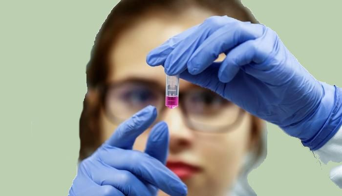

RECOMENDACIONES S.B.U. PANDEMIA COVID 19
Desde los primeros 4 casos reportados en diciembre de 2019 de un nuevo Coronavirus
(COVID -19) identificado en Wuhan provincia de china(1), se estima al día de hoy 150.000
muertes y mas de 2.5 millones de contagios alrededor del mundo...
Leer Más..

CASOS CONSIDERADOS SOSPECHOSOS
A partir de ahora se incluyen como nuevos síntomas la falta de
olfato y gusto. También se debe tener en cuenta fiebre a
partir de 37.5 grados centígrados...
Leer Más..

Declaración de la SIU sobre COVID-19
IU se complace en ofrecer la experiencia de 2020 el Congreso a través de su
plataforma virtual de confianza, SIU @ T . Durante los últimos 5 años, SIU
ha podido reunir a los urólogos utilizando esta tecnología dinámica...
Leer Más..
América Latina y el desarrollo de materias primas para la industria farmacéutica
América Latina tiene el potencial para generar materias
primas para la industria farmacéutica. César Rengifo, vicepresidente
sénior para Latinoamérica y el Caribe de la farmacéutica GSK,
explica cómo la región puede ampliar su rol...
Leer Más..
La FDA pide retirar de inmediato del mercado el medicamento contra la acidez estomacal Zantac
La Administración de Medicamentos y Alimentos de EE.UU. (FDA,
por sus siglas en inglés) le ha solicitado a los fabricantes
que retiren del mercado de inmediato todas las medicinas con ranitidina
Leer Más..